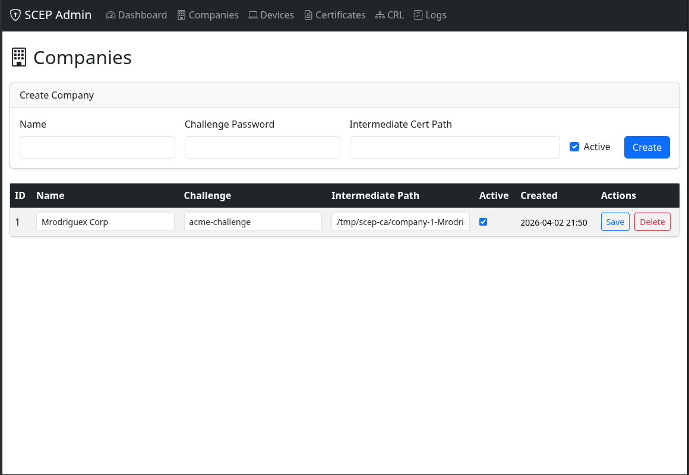
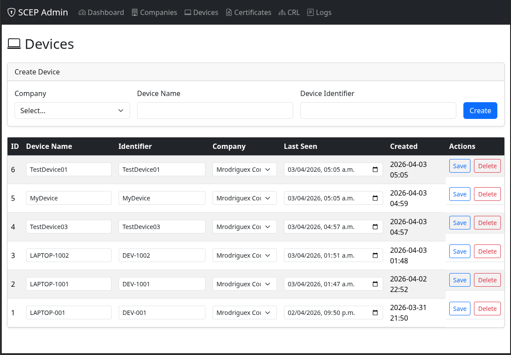
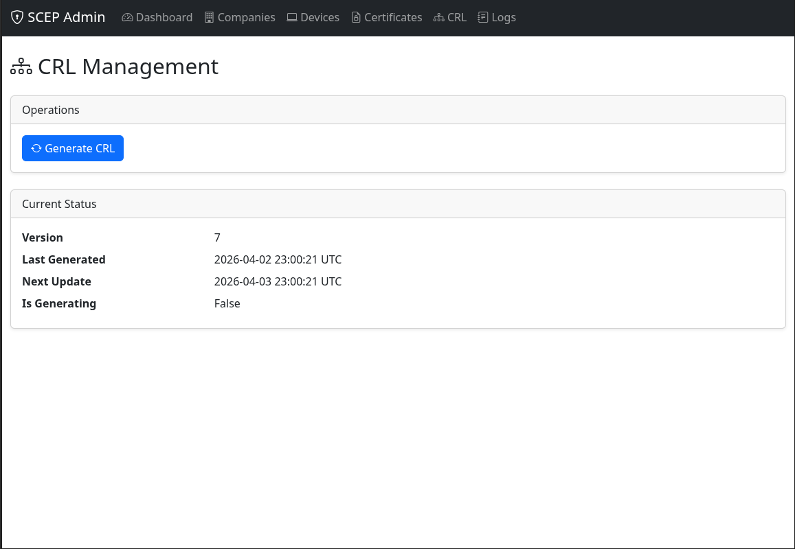
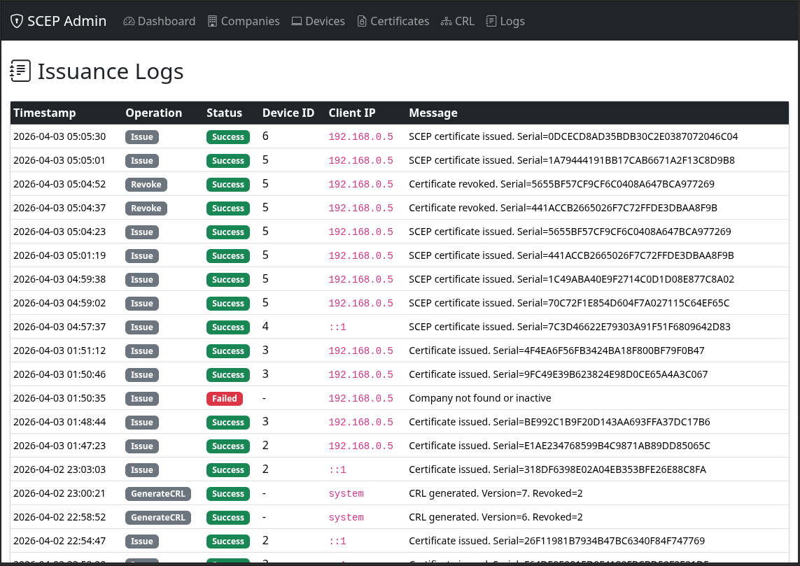
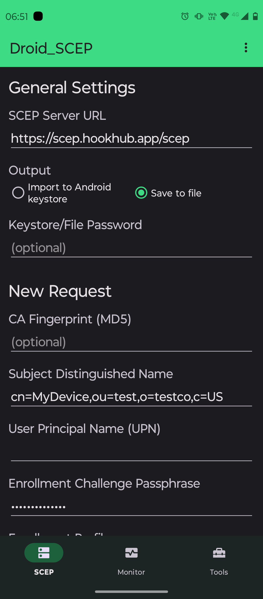
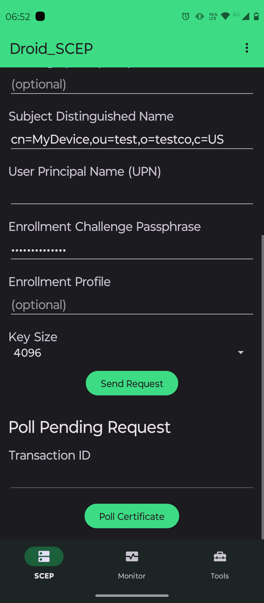
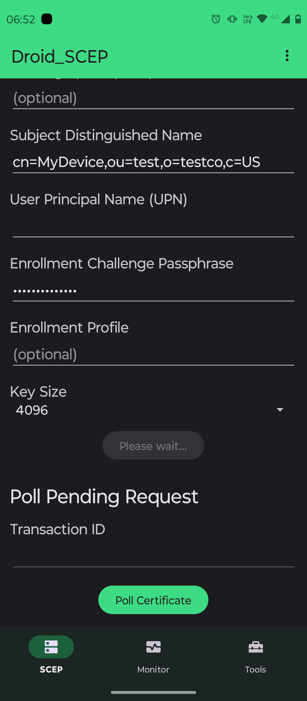
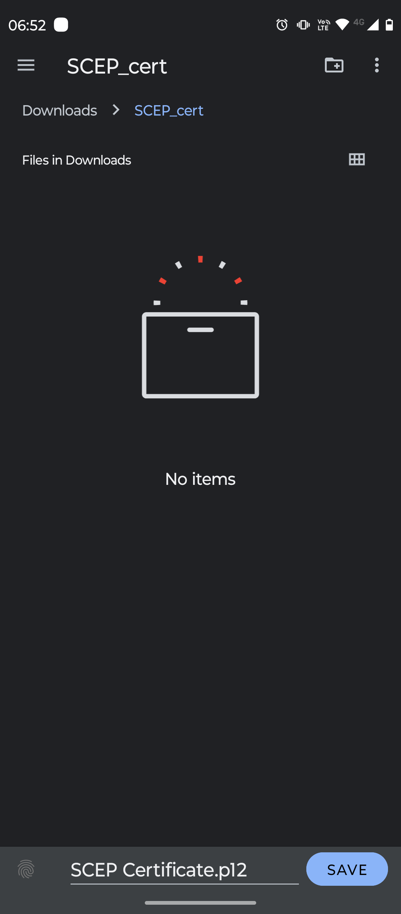

About
ScepServer is a production-ready, standards-compliant Simple Certificate Enrollment Protocol (SCEP) server and certificate management portal. It enables secure, automated certificate issuance, renewal, and revocation for managed devices, supporting scalable PKI workflows in modern enterprise environments.
Features
-
Modern, Secure, and Scalable SCEP Server for Enterprise PKI
- Automated certificate issuance, renewal, and revocation
- Certificate Revocation List (CRL) generation and status tracking
- Multi-tenant/company support
- Device enrollment and management
- Audit logging for all certificate operations
- RESTful API endpoints for admin operations
- Demo data seeding for development/testing
- Extensible, clean architecture with SOLID principles
- Built with .NET 8, ASP.NET Core, and Entity Framework Core
Tech Stack
Backend
.NET 8, ASP.NET Core, Entity Framework Core
Database
SQLite (default), SQL Server, PostgreSQL
Frontend
Razor Pages (admin UI)
Other
Dependency Injection, Logging
Usage
Admin UI
- Access:
https://localhost:5001/after running the app. - Navigation: Intuitive sidebar and dashboard for fast access to all management areas.
- Management: Companies, devices, certificates, CRL, and logs in a unified interface.
- Search & Filter: Quickly find records with instant search and advanced filters.
- Visual Status: Color-coded indicators for certificate and device health.
- Responsive: Works on desktop, tablet, and mobile browsers.






Mobile SCEP Testing (Droid_SCEP)
- This solution has been tested with the Droid_SCEP Android app for mobile certificate enrollment and management.
- Example test flows:




API Overview
Key endpoints:
- Enroll Certificate:
POST /scep/pkiclient.exe - Revoke Certificate:
POST /api/operations/revoke - Generate CRL:
POST /api/operations/crl/generate - Get CRL Status:
GET /api/operations/crl/status
See README for request/response examples.
Contact
Maintainer: Manuel Rodríguez Camacho